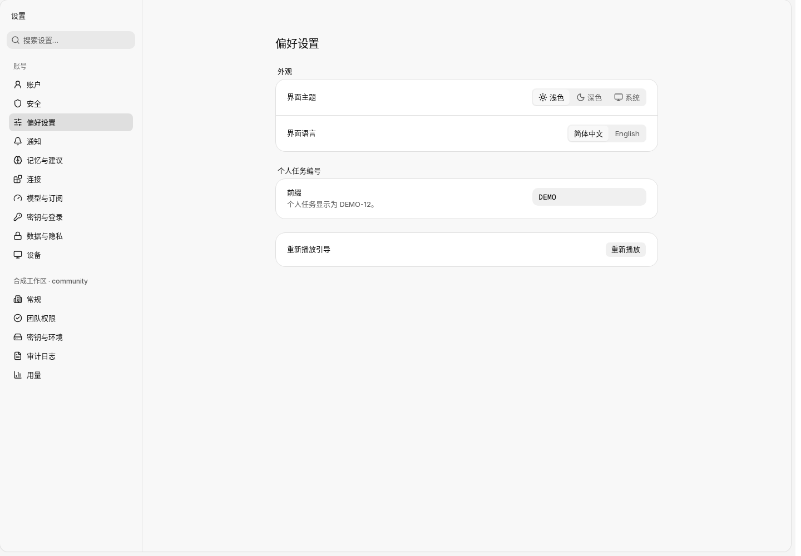
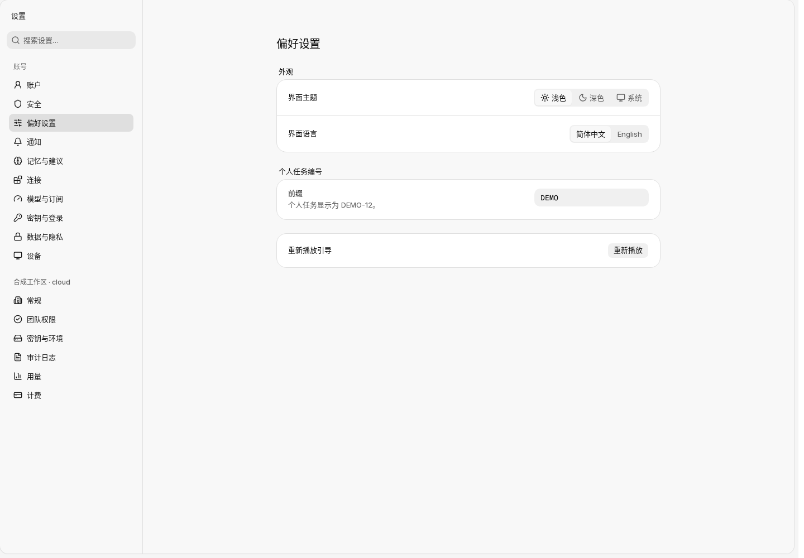
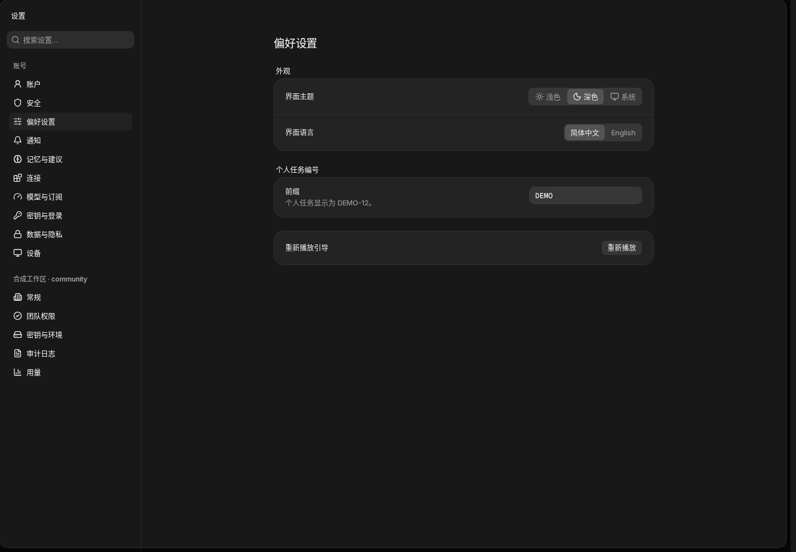
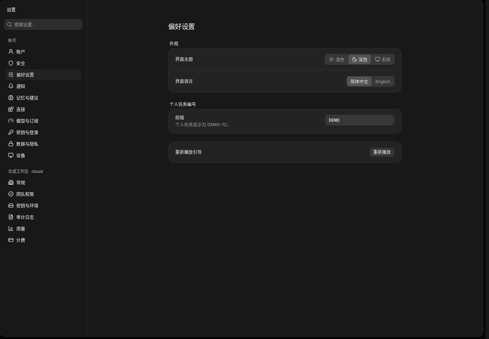

synthetic-zh-CN-light-community-settings.pngcommunity · 1440 × 1000 · light初始段 billing；实际标题 偏好设置；计费项 0
synthetic-zh-CN-light-cloud-settings.pngcloud · 1440 × 1000 · light初始段 preferences；实际标题 偏好设置；计费项 1
synthetic-zh-CN-dark-community-settings.pngcommunity · 1440 × 1000 · dark初始段 billing；实际标题 偏好设置；计费项 0
synthetic-zh-CN-dark-cloud-settings.pngcloud · 1440 × 1000 · dark初始段 preferences；实际标题 偏好设置；计费项 1